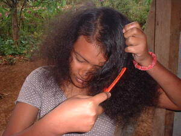

sugkad 
/sugkad/
n.
“comb”
n.
a comb (used for neatening the hair)
O. Syn. arang
Eng. comb
Tag. sukláy
Ceb. ?sudlay
Ilo.: sagáysay
Binukid: suwat
WBM: suwat
Ilianen: suwat
Tagbawa: suwat
Obo: suwat
Cotabato Manobo: suwat
Sarangani: sowat
Proto: suwat
OCM: Normal Garb (291), Ornament (301)
Online dict status: -
Usage level: F
v.
for someone (egsugkad, migsugkad/insugkad/pigsugkad, agent, eg><ø-) to comb the hair of somebody else (egsugkaren, sugkaren) somewhere (egsugkaran, migsugkaran/insugkaran/pigsugkaran, location, eg><an-)
Egsugkaran ka egpangabangi.
(I'll) help comb your hair
Eng. comb hair
Tag. suklayán
OCM: Toilet (302)
Online dict status: -
Usage level: R
v.
for someone (egpanugkad, agent, eg><ø-paN-) to comb (one's own hair) (egsugkaren, theme, eg><en-)
Eng. comb hair; brush hair
Tag. magsukláy; suklayín
OCM: Toilet (302)
Online dict status: -
Usage level: F
v.
(isusugkad, i-rdpCV-) to place a comb in one's hair as a decoration
Online dict status: -
Usage level: R
Updated by: RJH,QDL
Last updated: 12/Aug/2009
"egsugkara" in healthbook "Migpamawian ni Inuk ka sumbaley rin ne migpangaliskis"
"sugkad" in healthbook "Migpamawian ni Inuk ka sumbaley rin ne migpangaliskis"
"egsugkaren" in healthbook "Migpamawian ni Inuk ka sumbaley rin ne migpangaliskis"
"sugkad" in healthbook "Migpamawian ni Inuk ka sumbaley rin ne migpangaliskis"
This page last updated: 19/May/2012
Copyright © 2009-2010, Matigsalug Language Christian Association, Inc